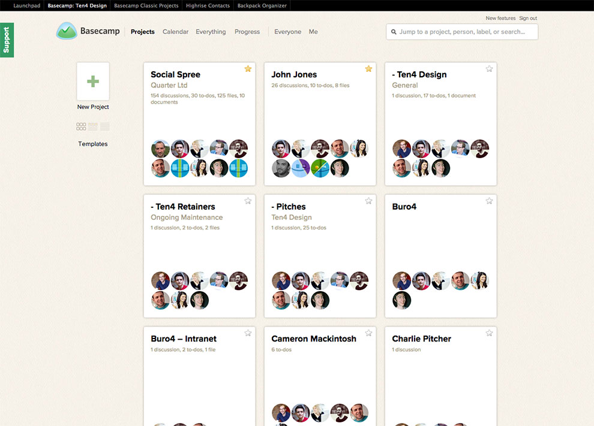

<!-- @include _header -->
<!-- $title Chapter 4: Design -->

<div class="row">
	<div class="w12">
		<div class="section">
			<h1><!-- $title --></h1>
			<p>In this chapter I will discuss my planning and design process for the graphical user interface of the application.</p>
		</div>
		
		<div class="section" id="inspiration">
			<h2>5.1 Inspiration</h2>
			<p>The first stage in the design process was to look at existing apps and trends to get an idea of what a modern, design-focused web application looks like as well as gauging my personal likes and dislikes.</p>

			<h3>Other web applications</h3>
			<p>Researching into other applications involved signing up for free accounts at many services to get a feel for their interfaces and process flows. While it would be more useful if these were the existing content strategy applications researched in the previous chapter none of them have a particularly design-focused aesthetic.</p>
			<p>Three of the applications I tested were particularly interesting:</p>
			<ul>
				<li>Layervault, an application for managing revisions to Photoshop files (<a href="https://layervault.com/">https://layervault.com/</a>)</li>
				<li>Iceber.gs, a Pinterest-like application for collecting design inspiration and ideas (<a href="https://iceber.gs/site">https://iceber.gs/site</a>)</li>
				<li>Basecamp, a project management application (<a href="http://basecamp.com/">Basecamp</a>)</li>
			</ul>
			<p>All of these applications embrace the clear typography.</p>
			<figure class="pull-right">
				
				<figcaption>Layervault interface</figcaption>
			</figure>
			<p>Layervault <span class="more"></span></p>
			<figure class="pull-right">
				
				<figcaption>Iceber.gs interface</figcaption>
			</figure>
			<p>Iceber.gs <span class="more"></span></p>
			<figure class="pull-right">
				
				<figcaption>Basecamp</figcaption>
			</figure>
			<p>Basecamp is a project management tool which focuses on.</p>

			<h4>Moodboard</h4>
			<figure>
				
				<figcaption>Basecamp</figcaption>
			</figure>

			<h3>Design trends</h3>
			<p>... <span class="more"></span></p>
		</div>

		<div class="section" id="proposed-features">
			<h2>5.3 Proposed features</h2>
			<p>hello. <span class="more"></span></p>
			<table>
				<thead>
					<tr>
						<th>Essential</th>
						<th>Nice to have</th>
					</tr>
				</thead>
				<tbody>
					<tr>
						<td>
							<p>Find all the pages of a website based on it's url</p>
							<p>Add annotations to each page</p>
							<p>Export a report showing the results of the content audit</p>
						</td>
						<td>
							<p>Google Analytics integration to return statistics for each page</p>
						</td>
					</tr>
				</tbody>
			</table>
		</div>

		<div class="section" id="wireframing-and-user-flow-diagrams">
			<h2>5.3 Wireframing and user flow diagrams</h2>
			<p>The first round of wireframes that I produced</p>

			<p>User flow diagrams.</p>
		</div>

		<div class="section" id="concept-designs-and-initial-feedback">
			<h2>5.4 Concept designs</h2>
			<p>Here are my initial concept designs</p>
			<div class="slider">
				<figure>
					
					<figcaption>Concept 1</figcaption>
				</figure>
				<figure>
					
					<figcaption>Concept 2</figcaption>
				</figure>
				<figure>
					
					<figcaption>Concept 3</figcaption>
				</figure>
			</div>

			<h3>Concept click-through</h3>
			<p><span class="revise">At this early stage in the development of the feature set the exact nature of the tool was hazy so I decided to create a mockup click-through instead of a full interactive prototype.</span></p>
			<p>After I completed the click-through I presented it to Ten4 for feedback. I received the following thoughts:</p>
			<ul>
				<li>Clean but somewhat boring design</li>
				<li>Looks simple to set up audits</li>
				<li>End point not flexible enough</li>
			</ul>
		</div>

		<div class="section" id="revised-design">
			<h2>5.5 Revised designs</h2>
			<p>After the feedback from my concept designs it was clear that revisions were needed to make the more fit-for-purpose. <span class="more"></span></p>
			<p>At this point I also knew that my application would be built using the Bootstrap framework so I aimed to adapt the layout slightly to suit the framework better.</p>
			<figure>
				
				<figcaption>Scoop login</figcaption>
			</figure>
			<figure>
				
				<figcaption>Scoop interface</figcaption>
			</figure>
		</div>

		<a class="next-part" href="<!-- @path implementation.html -->">Chapter 5: Implementation</a>
	</div>
</div>

<!-- @include _footer -->